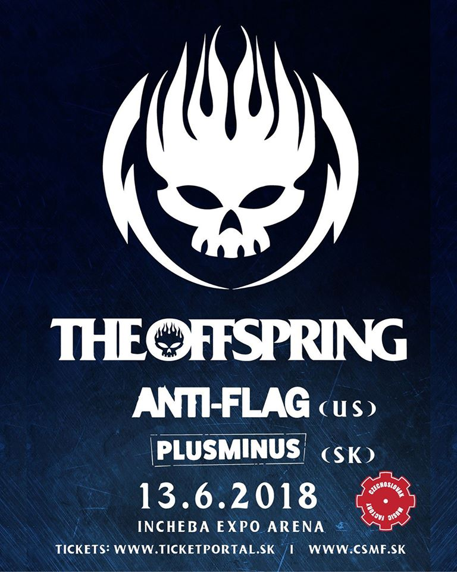

13/06/2018: THE OFFSPRING, ANTI-FLAG, PLUSMINUS, Incheba Expo Aréna, Bratislava
 Po cca 20-tich rokoch, èo som sa dostal ku kapele The Offspring, sa mi koneène podarilo prebojova� aj k ich live koncertu. Ostatne, na Slovensku sa objavili v rámci celej kariéry len druhı krát – ten prvı sa uskutoènil ešte v roku 2009 v Terchovej (èomu dodnes nechápem), ale keï�e ma festivalové vystúpenia a� tak nelákajú, poèkal som si na ich samostatnı koncert. Patriène som sa naò tešil, a to nie len z nostalgie. Toti� ako by to bolo teraz, keï sme s touto kapelou pre�ívali v podstate celú strednú školu. Keï sa v Deke 10 (pre tıch mladších TV hitparáda v 90tych rokoch) objavilo „All I Want“, bolo to ako pecka medzi oèi :) A neskôr sa to u� kompletne nieslo v rytme Americany ...
Do Bratislavy som sa vybral práve s par�ákom zo stredoškolskıch èias Robom a neskôr sa k nám pridal aj ïalší spolubojovník Joko. Keï�e sme mali ve¾a starostí s predkoncertnou bratislavskou obèerstvovacou tour, do Incheba Expo arény prichádzame pred ôsmou hodinou. Hneï od zaèiatku to sprevádza absolútny organizaènı chaos. Napriek tomu, �e boli vydané rázne upozornenia na asi milión zakázanıch predmetov (a my sme si preto radšej nevzali ani bundy a kvôli tomu potom do rána mrzli v bratislavskıch uliciach ... ok puboch), security sa ani len nepokúšali nieèo kontrolova�, a tak ste do sály mohli prepašova� pokojne aj samopa¾. Nehovoriac o tom, �e namiesto skenovania vstupenky típec èiarovı kód len tak natrhol :) Opä� ïalší koncert, kde by s trochou drzosti a nakopírovanımi vstupenkami vošlo zadarmo aj pol mesta. To bol ale ešte len zaèiatok. Po príchode do akéhosi vestibulu nás èakali nekoneèné rady – pomysleli sme si, �e to asi teraz prichádza tá kontrola a bude to nadlho. Omyl. Boli to fronty na pivo. Videl som u� všetko mo�né, ale toto bolo cez. Odhadom tak 3-4 tisíc ¾udí a k dispozícií asi dve pipy. (aj keï sa neskôr zistilo, �e jeden bar je ešte dole pri pódiu, spoloènı s VIP státim, ale tak predsa len, tam sa nedostal ka�dı). Skutoène obdivujem tıch ¾udí, èo tam dokázali èaka�. Ja som to skúsil, ale po cca piatich minútach ma to ve¾mi rıchlo prešlo, keï som sa pohol asi o pol metra, a k vıèapu zostávalo ešte asi 15 … Nerád by som polovicu reportu zahodil opisovaním len organizaènej stránky, ale k tej ešte to¾ko. Po chvíli sa par�ák Robo nejako stratil, a tak som sa ho vybral h¾ada�. Prešiel som všetko, státie, tribúny, horné tribúny – okrem jednej ma nikde nikto nezastavil a nepıtal sa, èi mám správnu vstupenku. Chudáci ¾udia, ktorí dali za “luxusnı” vıh¾ad takmer dvojnásobok …
20 minútové vystúpenie domácich PlusMínus sme bohu�ia¾ nestihli vôbec, a nieèo vyše polhodinové kapely Anti-Flag som strávil preva�ne tımto blúdením po Inchebe. Aj keï som prišiel primárne na The Offspring, bol som zvedavı aj na túto ïalšiu legendárnu americkú nakladaèku. A vyzerá to, �e aj znaèná èas� publika. V podstate to poèas ich vystúpenia vyzeralo, akoby hlavná hviezda veèera u� hrala. Naozaj dravı prejav, rıchlovky, skoky, energia. Oceòujem ale hlavne komunikáciu kapely s publikom. Dokázali to, �e èlovek ani nepotreboval ve¾mi vedie� anglicky, preto�e som mal pocit, �e zhruba 90% slov letiacich z pódia tvorili „fuck“ a „shit“. Prípadne ešte obèas aj sofistikovanejšie „fucking shit“. Toto ma �ia¾ na vystúpeni tejto kapely najviac odradilo. Mo�no to patrí k ich imid�u, ale mne to prišlo dos� primitívne, a� som sa miestami doslova cítil trochu trápne. Jeden z tıch zaujímavejších prvkov ale predviedli na samotnı záver. Videl som to len okrajovo ale mal som pocit, �e kapela poprosila ¾udí pod pódiom o priestor, poznášala nástroje dole a poslednı song dohrali priamo v kotly. Myslím, �e ako support bratislavského vystúpenia Offspringu mô�u by� Anti-Flag maximálne spokojní.
V tomto momente sme sa u� ale opä� všetci traja zosynchronizovali hneï za plotom, ktorı odde¾oval VIP státie od státia nás normálnych smrte¾níkov, a kde sa nachádzal aj spomínanı druhı bar. Tam to u� šlo relatívne rıchlo, ale predsa len som nechcel niè riskova� – napriek tomu, �e Robec, kım sme ho h¾adali, u� stihol ma� v rukách pripravené pivá aj pre nás, objednal som radšej rovno ïalšie tri, a k tomu pre istotu aj po aperitíve. Vyzeralo to, �e prestavba stagu bude chví¾u trva�, a tak sa nám zachcelo ešte aj cigaretky. Vbehli sme do prvej miestnoti ved¾a h¾adiska, �e buï nájdeme fajèiarsky vıchod, ktorı tam údajne mal niekde by�, alebo si dáme cigu na hajzly. No stalo sa ešte lepšie. Narazili sme na neuzamknutú prázdnu miestnos�, kde zevlili len ïalší dvaja ¾udia a nikto nikde. Obrovskı backstage/fajèiarka len pre nás :) Ak by nás tam v tom momente niekto prichytil, okam�ite by sme museli z koncertu letie� von (keï�e predpokladám, �e v celej Inchebe je zákaz fajèi�), ale neuverite¾ne laxnú organizáciu a bezpeènos� som u� spomínal vyššie.
V tom sme u� ale zapoèuli zvuky zo sály, znelo intro a razom sme sa pratali naspä� na naše miesta. A je to tu, show The Offspring štartujú bicie v podaní skladby „Americana“. Hovorím par�ákovi Robovi:
„Nejdeme smerom k nejakému väèšiemu pogu?“
Robec: „Naèo, spravíme si vlastné!“
Po koncerte sme sa zašli trocha osuši� do nášho sukromného backstagu. Keï sme potom ešte rozdychávali pred sálou, po anglicky sa k nám prihovoril típek s tım, èi nevieme, kde je ten Randal, v ktorom údajne mala by� afterpárty. My �e jasné, akurát tam smerujeme, nech sa pridá k nám. Vysvitlo, �e típek sa volá Onur a je a� z Turecka. Vravel, �e je huge fan, ukazoval nám transparent, s ktorım stál celı èas v prvom rade. Pred koncom koncertu mu Noodles hodil pohár rovno do hlavy, na èo vravel, �e to bol jeho �ivotnı zá�itok :D Chlapík to a� do Randalu nakoniec nedal, ale stihli sme si da� po dve v starom meste a mali sme celkom zábavnı èas, keï sme napríklad zistili, �e krá¾ sa povie krá¾ aj po turecky :D
A� na katastrofálnu organizáciu musím úprimne poveda�, �e dlho som sa tak dobre na koncerte nezabavil a takéto parádne pogo dovolím si tvrdi� som mo�no ešte ani neza�il. Od prvej skladby a� po poslednú èisté, ale zároveò "zodpovedné" zlo, ktoré som v tom našom kútiku h¾adiska rozbehol ja s par�ákom Robom, ale po zopár skladbách to nabralo neoèakávate¾né rozmery. A mo�no som u� len starı a aj obyèajnı bordel mi príde ako totálne zverstvo :) The Offspring v Bratislave – som naozaj rád, �e som tam bol a kedyko¾vek by som si to dal ešte raz. A vzh¾adom na krátkos� setu k¾udne aj hneï po sebe! ;)
by Krá¾ Balkizár